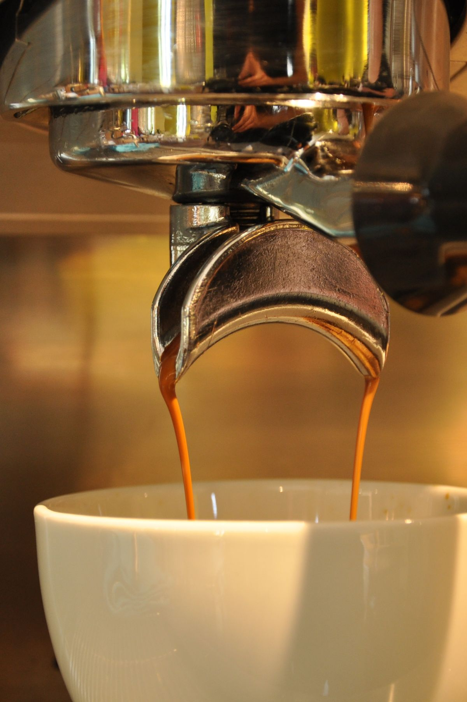
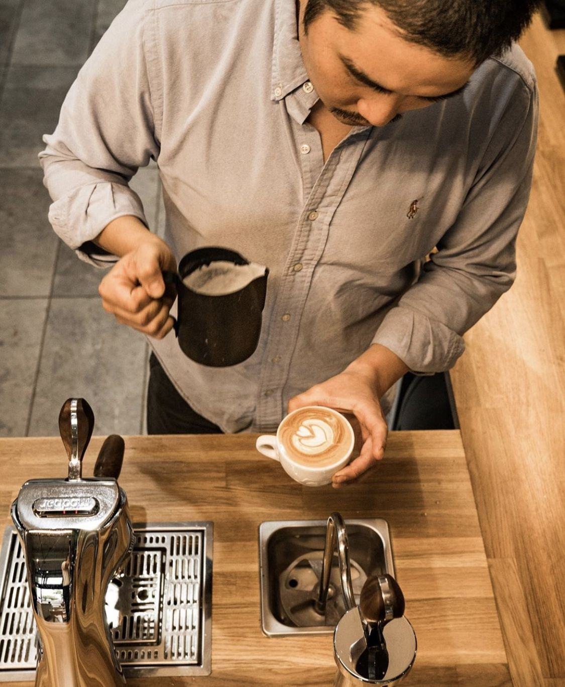
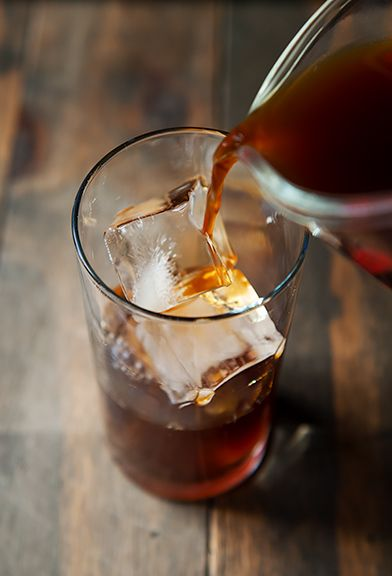
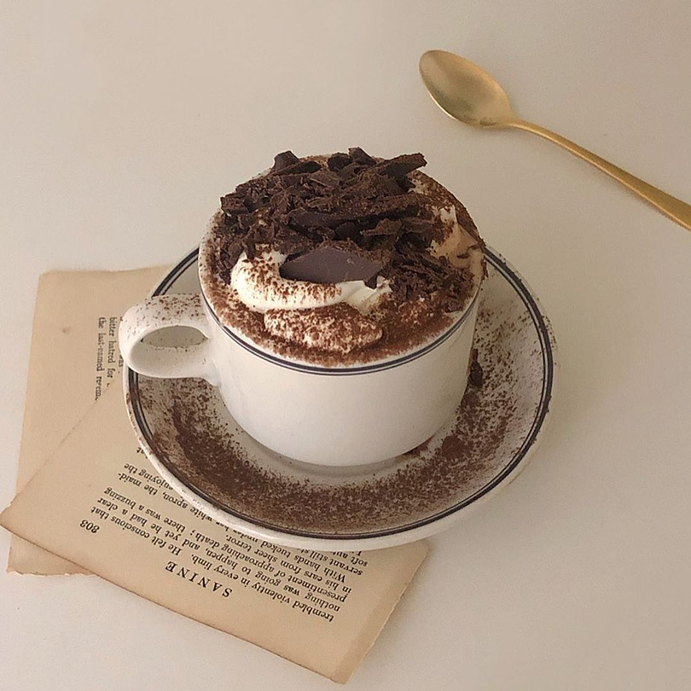

Signature Espresso
Brewed with our custom single-origin beans. Enjoy a perfectly balanced espresso, a velvety flat white, or our signature creamy raff made with house-crafted syrups.
We believe great coffee speaks for itself. It starts with ethically sourced beans, precise extraction, and a genuine passion for the craft.
Trained in the vibrant specialty coffee hubs of South Korea, our head barista brings meticulous technique and care to every single drink we pour. Whether you need a quick morning espresso to kickstart your day or a quiet space for an afternoon break, we offer a refined yet welcoming coffee experience in the heart of Astana.

Our menu features classic espresso, refreshing cold brews, and comforting caffeine-free options, all crafted with premium local ingredients.

Brewed with our custom single-origin beans. Enjoy a perfectly balanced espresso, a velvety flat white, or our signature creamy raff made with house-crafted syrups.

Cool down with a crisp iced pour-over or our fresh banana smoothie—frequently called the best in the neighborhood by our regular guests.

Rich hot chocolate, creamy milkshakes, and a carefully curated selection of loose-leaf herbal and black teas for when you want something different.